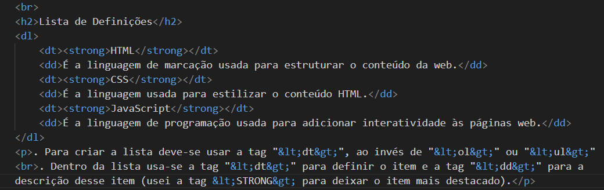

OBS: tirei o type da tag <ul>, pois aparentemente é hábito antigo..
Lista de Definições
HTML
É a linguagem de marcação usada para estruturar o conteúdo da web.
CSS
É a linguagem usada para estilizar o conteúdo HTML.
JavaScript
É a linguagem de programação usada para adicionar interatividade às páginas web.
. Para criar a lista deve-se usar a tag "<dt>", ao invés de "<ol>" ou "<ul>"
. Dentro da lista usa-se a tag "<dt>" para definir o item e a tag "<dd>" para a descrição desse item (usei a tag <STRONG> para deixar o item mais destacado).

Este é o código utilizado para fazer a lista (adicionei ela depois).